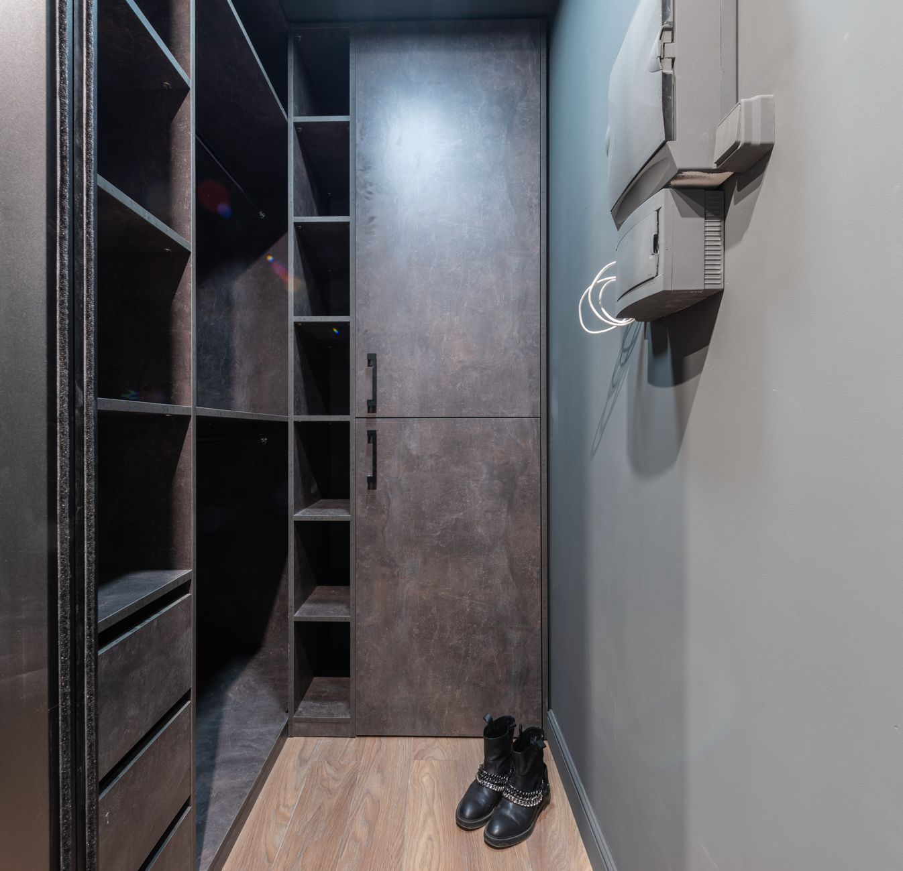

Kuchnie, szafy, garderoby i zabudowy na wymiar — z własnego warsztatu w Grodzisku Mazowieckim.

Każde zlecenie zaczynamy u Ciebie: mierzymy pomieszczenie, sprawdzamy piony, skosy i to, jak otwierają się drzwi obok. Dopiero potem siadamy do projektu.
Meble powstają w naszym warsztacie, a nie u podwykonawcy. Dzięki temu wiemy, z czego są zrobione i odpowiadamy za każdy milimetr — od korpusu po ostatni front.
Najczęściej trafiają do nas kuchnie i garderoby — ale robimy każdą zabudowę, którą da się zaprojektować pod wymiar.

Układ pod Twój tryb gotowania, fronty lakierowane lub w okleinie, sprzęt w zabudowie i blat dobrany do codziennego użytku.
Zobacz →
Zabudowa od podłogi po sufit: drążki, półki, szuflady i oświetlenie rozplanowane pod to, co naprawdę w nich trzymasz.
Zobacz →
Skosy, wnęki i wąskie korytarze — miejsca, w których meble z sklepu nigdy nie pasują.
Zobacz →
Fronty przesuwne lub uchylne, cicho domykane, dopasowane do ściany co do milimetra.
Zobacz →
Biurka, zabudowy pod dokumenty i miejsce do pracy wpasowane w domowy salon lub firmę.
Zobacz →Wiesz, co się dzieje na każdym etapie i ile to kosztuje, zanim zamówimy pierwszą płytę.
Przyjeżdżamy na miejsce, mierzymy i rozmawiamy o tym, jak korzystasz z pomieszczenia.
bezpłatnieRysujemy układ i pokazujemy, jak mebel wpisze się we wnętrze. Poprawki wprowadzamy do skutku.
bezpłatnieJedna cena za komplet: materiał, okucia, wykonanie i montaż. Bez dopisków po fakcie.
Meble powstają w naszym warsztacie, na sprawdzonych płytach i okuciach.
Wnosimy, składamy i regulujemy na miejscu. Zostawiamy posprzątane.
Kuchnie, garderoby i zabudowy w takim wykonaniu robimy najczęściej. Pełne albumy pokazujemy na miejscu, przy pomiarze.




Próbniki przywozimy na pomiar — kolor płyty inaczej wygląda w salonie, a inaczej w sklepie. Podpowiadamy, co się sprawdzi przy dzieciach, a co przy blacie zalewanym słońcem.
Materiały i okucia, na których pracujemy na co dzień
Ocena 5,0 w Google z 15 opinii. Poniżej fragmenty tego, co napisali ludzie, dla których robiliśmy meble.
Zleciłam wykonanie kuchni na wymiar i efekt końcowy przerósł moje oczekiwania. Meble są perfekcyjnie dopasowane, estetyczne i bardzo solidne. Całość została wykonana w ustalonym terminie, bez żadnych opóźnień.
Zamówiłam zabudowę przedpokoju. Na etapie rozmów pan Paweł z uwagą słuchał i jednocześnie doradzał korzystniejsze rozwiązania. Meble zostały pięknie i estetycznie wykonane oraz perfekcyjnie dopasowane. Wszystko wykonane w terminie.
Wizualizacja przygotowana przez zespół została oddana w 200%. Wsparcie w wyborach, profesjonalizm, poczucie stylu i dbałość o szczegóły to cechy, na które można liczyć podczas współpracy.
Opinie pochodzą z wizytówki Google MADE Manufaktura Mebli
Nic. Przyjeżdżamy, mierzymy i przygotowujemy projekt razem z wyceną — dopiero wtedy decydujesz, czy wchodzimy w temat.
Termin podajemy przy wycenie, bo zależy od zakresu i dostępności frontów. Realny termin dostajesz na piśmie razem z ceną — nie przesuwamy go po fakcie.
Tak. Pracujemy w Grodzisku i okolicy — Milanówek, Podkowa Leśna, Brwinów, Żyrardów, Pruszków oraz zachodnie dzielnice Warszawy.
Tak. Zabudowa sprzętu, blat i oświetlenie to część projektu — możesz kupić wszystko u nas albo dostarczyć własne, wtedy uwzględniamy to w wymiarach.
Poprawiamy. Mebel wyjeżdża z warsztatu wtedy, kiedy pasuje co do milimetra — a jeśli coś wymaga regulacji, wracamy i dopinamy temat.
Zadzwoń albo napisz — umówimy termin i przyjedziemy z próbnikami. Pomiar, projekt i wycena bez żadnych zobowiązań.